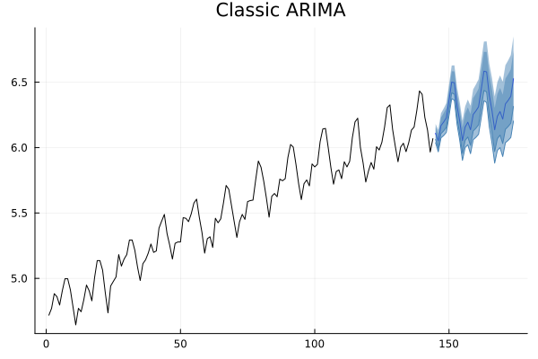

Boosting an ARIMA model in Julia
state space models / modelos de espacios de estados
JuliaLang
ARIMA
Boosting
Abstract
Here you’ll learn how to boost your ARIMA model with Julia.
Boosting ARIMA
I first came into contact with boosted ARIMA with the now defunct boostime package in R. The idea was quite simple: time series models are not perfect and the errors (residuals) might not be completely white noise. There might be patterns that the model was not able to capture. It is of these gaps that an additional boosting model might take advantage.
The main idea of boosting the ARIMA model is constructing a model which combines both the ARIMA and a boosting algorithm for the residuals:
Predictions = ARIMA(data) + BOOST(residuals)For the purpose of our model we’ll use the XGBoost.jl and StateSpaceModels.jl packages.
using XGBoost, StateSpaceModels, DataFrames, CSV, PlotsOne of the default datasets is the Air Passengers dataset (a classic from Box et al !) which contains information of the total amount of passengers in a US airline from 1949 to 1960.
passengers = CSV.read(StateSpaceModels.AIR_PASSENGERS, DataFrame)The first entries of the DataFrame look like this:
first(passengers, 5)5×2 DataFrame
Row │ month passengers
│ Date Int64
─────┼────────────────────────
1 │ 1949-01-01 112
2 │ 1949-02-01 118
3 │ 1949-03-01 132
4 │ 1949-04-01 129
5 │ 1949-05-01 121Now to properly fit the model one should perform a decomposition, check the PACF, etcetera. The purpose of this entry is not to discuss how to do exploratory data analysis for time series modeling. You can check that elsewhere. For now we’ll assume that a good auto-arima model will consider up to 12 seasons:
#Transform to log scale for better fit
log_air_passengers = log.(passengers.passengers)
#Fit the 'best' arima (in real life increase max_P, max_Q, etc)
model = auto_arima(log_air_passengers; seasonal = 12)
forecast_model = forecast(model, 30) #Predict next 30 months#Show the forecast
Plots.plot(model, forecast_model; title = "Classic ARIMA", label = "")